SSHD2382 · Category 06
Packaging
1. Scope
This category has 14 books. Together they cover these aspects of packaging:
| Aspect | Question | Key books |
|---|---|---|
| Strategy | How does packaging "speak" and sell for the brand on the shelf? | 《創造品牌的包裝設計》, Stafford Cliff, 50 Trade Secrets |
| Structure | How is a carton cut, folded and glued? How do materials protect the product? | 《紙品包裝結構解析》, 《拿來就用的包裝設計》 |
| Surface | How do colour, type, images and cultural elements shape the look of a pack? | 《包裝設計色彩》, 《中式元素》, 《食品包裝設計》, 《簡約包裝》 |
| Responsibility | How can we reduce waste and extend use? | 《環保包裝設計》 |
2. Core Concepts
2.1 The Four Functions of Packaging
2.2 Levels of Packaging
| Level | Examples | Design focus |
|---|---|---|
| Primary | Bottles, cans, bags | Touches the product directly; material safety; user experience |
| Secondary | Cartons, outer sleeves | The display face on the shelf; brand communication |
| Tertiary | Shipping cartons, pallets | Logistics efficiency, stacking strength, labelling |
2.3 From 4P to 4C
Packaging is part of the marketing mix. The traditional 4Ps (Product, Price, Place, Promotion) start from the company; the 4Cs (Consumer, Cost, Convenience, Communication) start from the consumer. A good packaging brief should answer both sets of questions: what is sold, where it is sold and at what price—and who buys it, why they buy it and how they use it.
2.4 Information Hierarchy on the Display Panel
2.5 Range Packaging
When one brand has several products, a fixed layout + variable colours or patterns builds a family look. Shoppers first recognise the brand from a distance, then move closer and tell the flavours apart by colour. Many of the jam, cheese and snack cases in 《食品包裝設計》 use this "consistent format, colour-coded" strategy.
3. Principles & Methods
3.1 Carton Structure and the Flat Net (Dieline)
Common structure types:
| Type | Features | Typical uses |
|---|---|---|
| Tuck end | Simple structure, low cost | Medicines, cosmetics, snacks |
| Crash lock / Snap lock | Self-locking base, carries more weight | Heavier bottles and jars |
| Lid and base | Two pieces, feels premium | Gift boxes, shoe boxes, jewellery |
| Sleeve and tray | Opening feels like a ritual | Chocolate, stationery, business cards |
| Carry box | Handle formed in one piece | Takeaway, cakes, multi-item sets |
| Pillow box | Curved creases, no glue needed | Small gifts, accessories |
| Display / PDQ | Opens straight into a shelf display | Retail counters |
3.2 Materials and Finishing
- Paper: white card, grey-back board, kraft paper, corrugated board (E-flute, B-flute, etc.), speciality papers.
- Other: glass, PET plastic, aluminium cans, tinplate, wood, fabric, moulded pulp.
- Finishing: foil stamping, embossing, spot UV, lamination, die-cut windows, windows with film patches. The more finishes you add, the higher the cost and the harder the pack is to recycle.
3.3 Strategies for Eco Packaging
flowchart LR reduce["Reduce<br/>less material, smaller size"] --> reuse["Reuse<br/>second use, refillable"] reuse --> recycle["Recycle<br/>single material, easy to separate"] recycle --> renew["Renew<br/>degradable, recycled material"]
Common approaches in the cases in 《環保包裝設計》: use structure instead of glue and tape; form the pack from a single sheet; make the packaging part of the product (for example, it becomes a plant pot, a hanger or a toy); reduce ink coverage; avoid paper–plastic laminates that cannot be separated.
3.4 Colour and Cultural Elements
- Colour first: 《包裝設計色彩》 points out that colour is the first signal people notice on the shelf. Category conventions (milk often uses white and blue, coffee brown and black) are a shortcut, but also a frame you can break.
- Chinese elements: paper-cutting, calligraphy, auspicious motifs (the characters shou ("longevity") and fu ("good fortune"), cloud patterns), traditional colours (Chinese red, dark blue-green, gold) and so on. Used well, they build a cultural identity; avoid piling up symbols without translating them into a modern form. The work of Kan Tai-keung and his designer friends shows how to transform traditional elements with a minimal approach.
3.5 Stafford Cliff's Tips (Summary)
- A pack should be recognised from three metres away and understood within thirty centimetres.
- The act of opening is itself part of the brand experience.
- One strong idea beats ten decorations.
4. Selected Figures
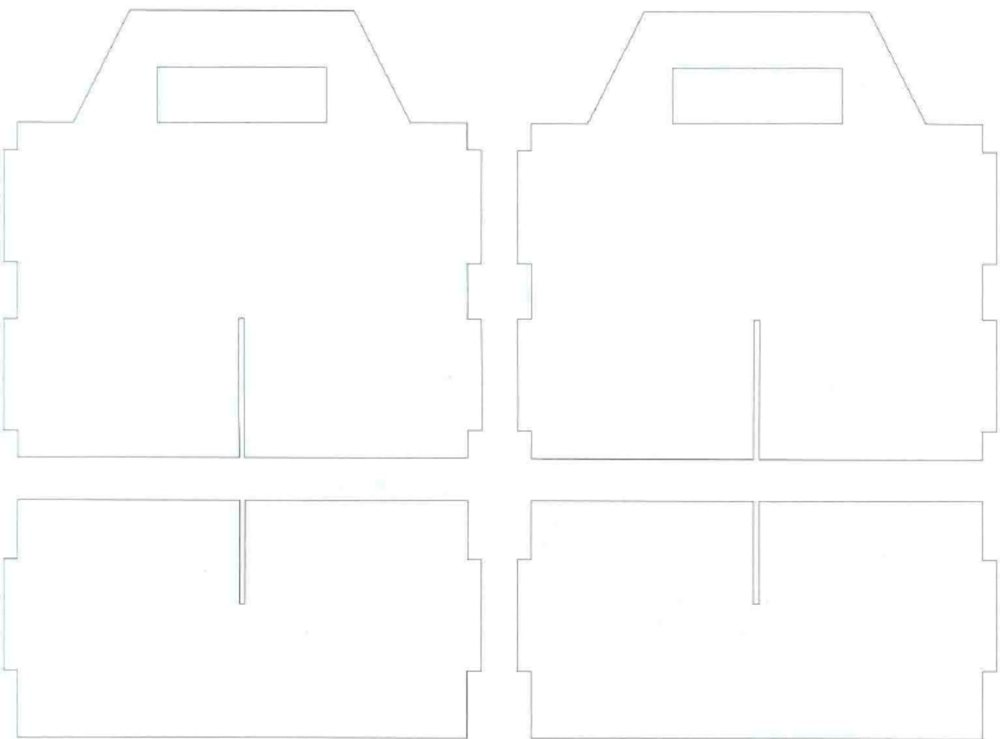
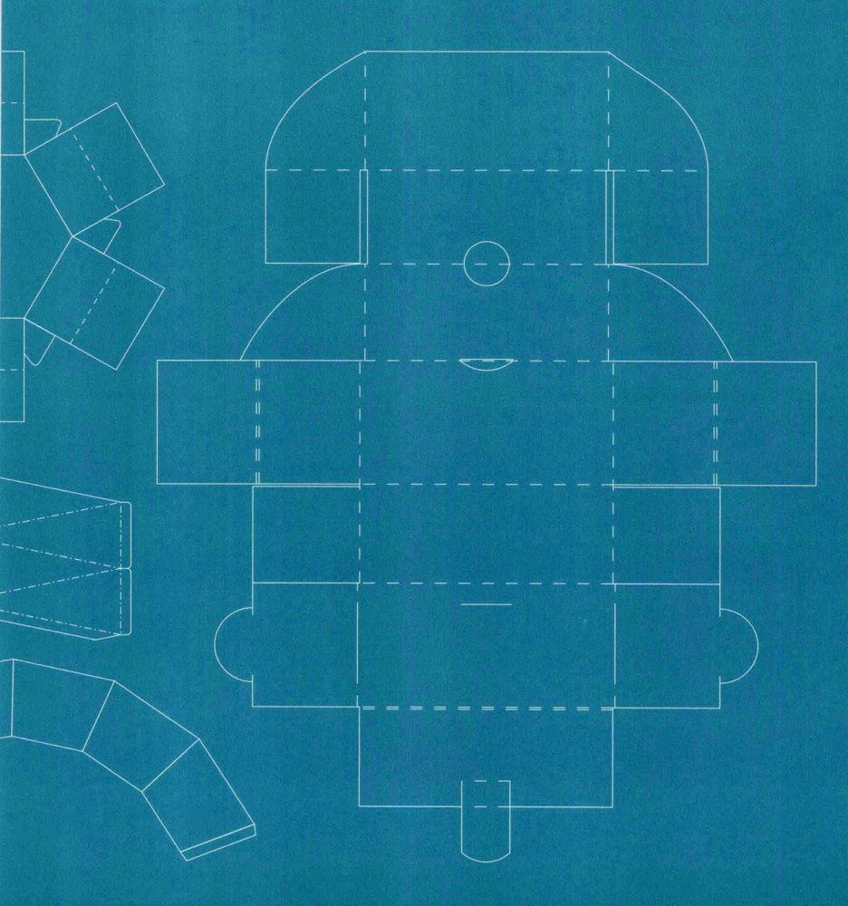
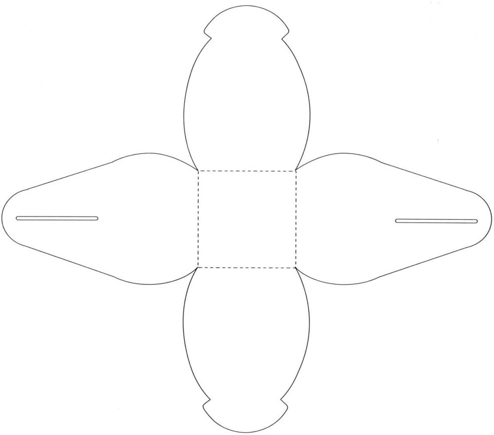
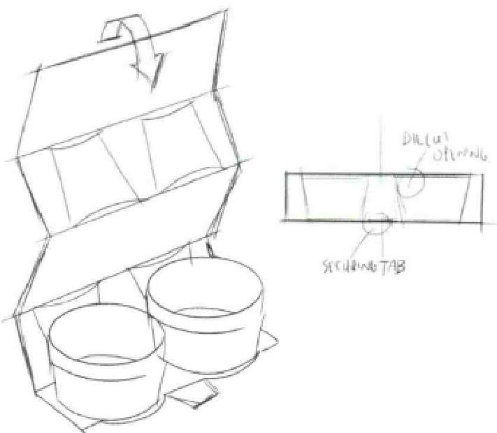
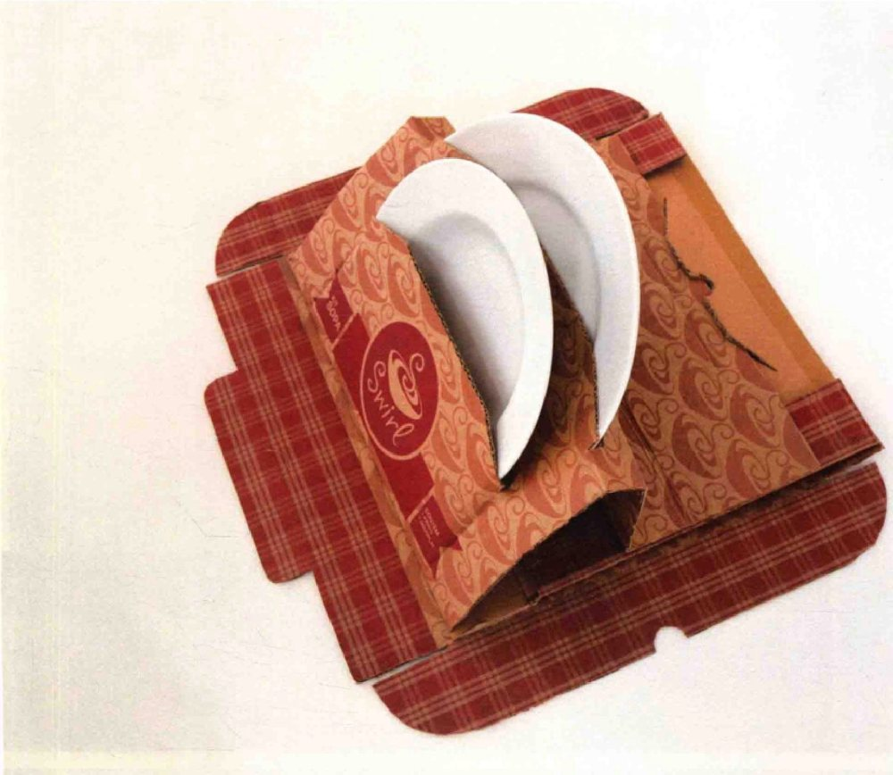
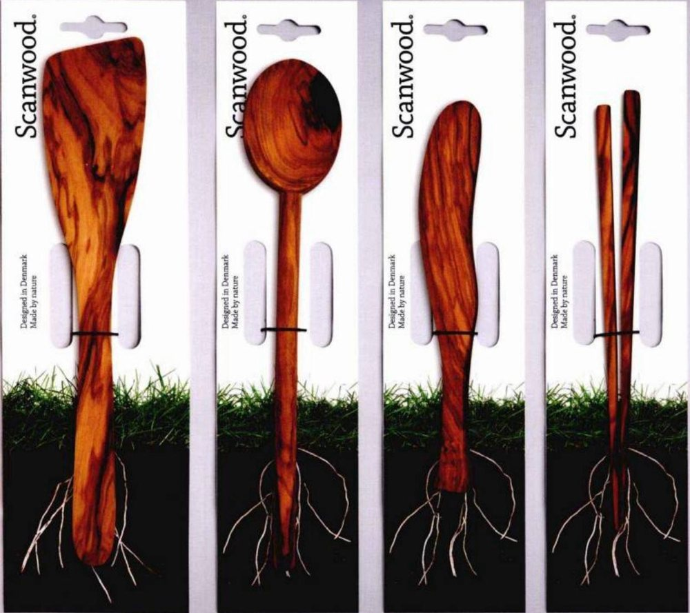
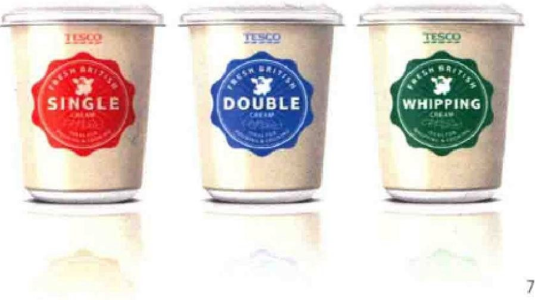
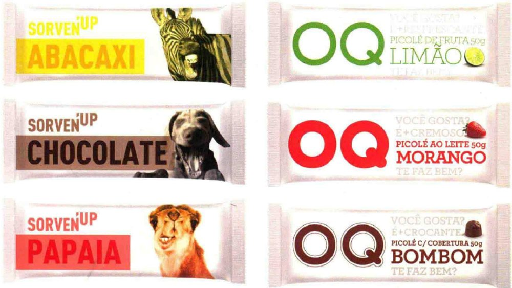
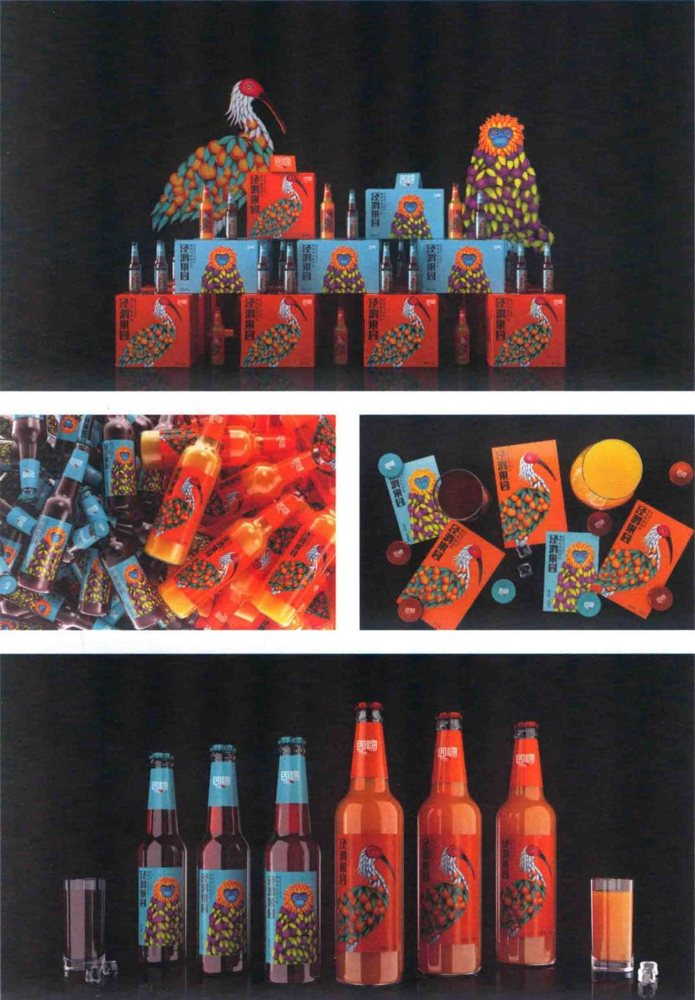
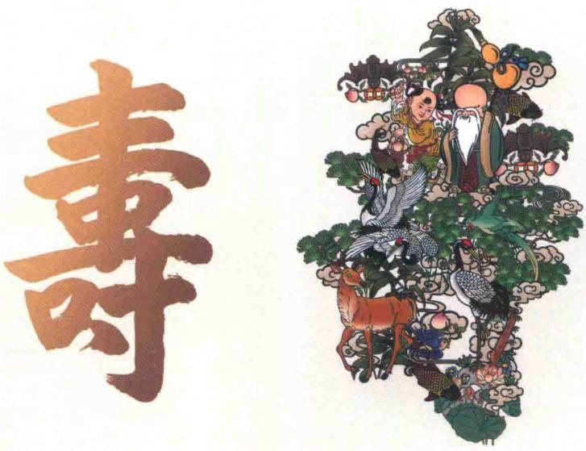
5. Source Bookshelf
Suggested reading order: 《創造品牌的包裝設計》 (strategy) → 《紙品包裝結構解析》 (structure) → 《環保包裝設計》 → 《食品包裝設計》 and GRIP, 1000 Package Designs (case libraries).
Show 14 titles
- [030]創造品牌的包裝設計 - [052]現代設計色彩教材叢書：包裝設計色彩 - [106]包裝設計藝術：王紹強 - [166]紙品包裝結構解析 - [167]新包裝 - [168]環保包裝設計 - [169]50 Trade Secrets of Great Design Packaging - [170]1000 Package Designs：A Comprehensive Guide - [171]拿來就用的包裝設計 - [191]食品包裝設計 - [193]包裝設計+：給你靈感的包裝方案 - [274]包裝設計家：靳埭強與他的設計師朋友 - [323]簡約包裝 Simply Packaging - 中式元素視覺傳達：包裝設計6. Study Cues
- Take a pack from home. List its primary, secondary and tertiary packaging, and assess what each level does.
- Take a carton apart and lay it flat. Trace its cut lines and fold lines, and identify which structure type it is.
- Design range packaging for one product in three flavours: keep the layout fixed and change only the colour and one image element.
- In a supermarket, photograph ten packs from the same category and sum up the category's colour conventions. Will your design follow them or break them?
- Redesign an over-packaged product and use Reduce–Reuse–Recycle–Renew to explain your improvements.
7. Each Book
Each book in the bookshelf is described below. Every title above links to its section.
創造品牌的包裝設計
Original title: Packaging the Brand: The Relationship Between Packaging Design and Brand Identity
Author: Zhang Fumei
Scope. This book asks whether packaging design is decorating a product or building a brand. It starts from Beatrice Warde's 《透明的高腳杯》, then compares two positions: "packaging is branding" and "packaging and branding are not the same thing". It uses the 4Ps, the 4Cs, Cloud Nine, and the difference between new and established brands to show the decisions a designer has to make in a saturated market. Before a brand packaging assignment, use the book's questions to settle your position first, then work on the form.
Main ideas
- Warde's 1932 talk compared printing to a crystal goblet: design can be finely decorated, or it can be neutral and let the content show itself. The book carries this question straight over to packaging.
- A pack is at once a story, a message, a medium and a conversation between buyer and seller. It is not just a container with graphics printed on it.
- Richard Gerstman argues that packaging is branding; another view treats packaging as only one channel alongside advertising, PR and the web. The Coca-Cola can is used as an example: take away the type, colour and imagery, and what is left is just a metal can.
- When products in a category differ very little, the decision to buy often happens at the moment of looking at the pack, and it can grow into a long-term emotional bond.
- The book asks designers to answer five things: their role, their ethical position, whether product or brand comes first, the truth of design, and what you bring to the project. The 4Ps and 4Cs are tools for turning these judgements into the marketing mix.
Methods
- Before you start, write one sentence: should this pack, like the goblet, let the product be seen, or should the design itself speak? Write both sentences, then delete one.
- Take away the logo, colours and type for a moment and keep only the container. If the brand value disappears with them, state in your assignment notes which elements cannot be removed.
- Use the 4Ps and the 4Cs to list one decision each that would change the box style, material or layout. Do not just write slogans.
- Make a one-page brief from the book's five questions. If you cannot answer "what do you bring?", that is where the concept is still empty.
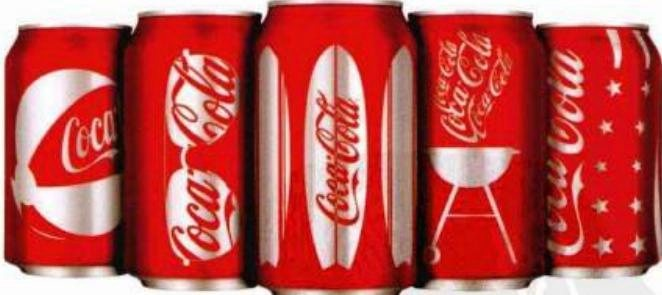
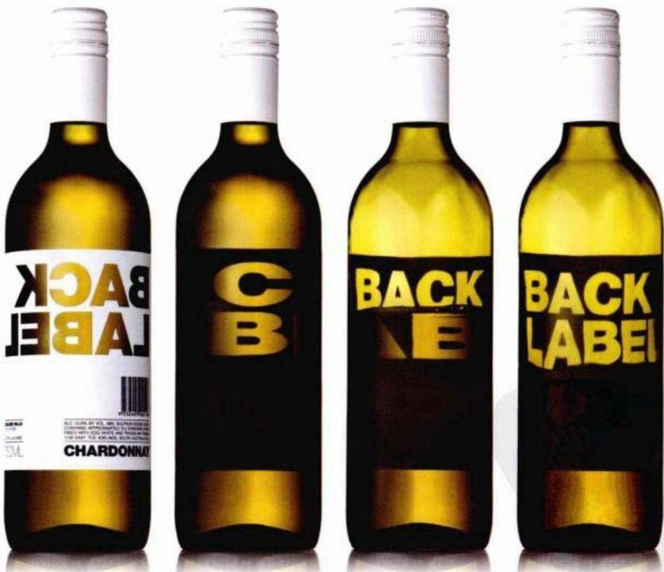
Study cues
- Warde's goblet metaphor asks whether design should add decoration or present the content transparently. Which debate in the Coca-Cola can example is the same argument?
- Choose a pack you are working on. Write one concrete decision each from the 4Ps and the 4Cs, and explain whether you chose "neutral delivery" or "letting the design show its personality".
現代設計色彩教材叢書：包裝設計色彩
Scope. This textbook connects colour theory to packaging. The first half covers NCS, PCCS, light, and hue, value and chroma. The second half covers the definition of packaging and the roles of packaging colour: organising, use, memory, image, classification and grading, and protection. When choosing colours for packaging, use it to check whether a palette is classifying, being remembered, or just being bright.
Main ideas
- The book uses NCS as its language of analysis, because colour perception is a physiological and psychological reality, which is not the same thing as physical or chemical wavelength. Design looks at effect and symbolism, not just the spectrum.
- Without light there is no colour. Newton's seven colours are used to explain hue as the appearance of visible light; the reddish morning sun and the blue sky are explained by wavelength and how light passes through the atmosphere.
- Value can stand apart from hue and be shown in black, white and grey alone. The book uses the light and dark tones of ink-wash painting to show this. Chroma is vividness versus dullness: within the red family, orange-red, vermilion, peach-red and crimson are all lower in chroma than pure red.
- Packaging is defined as the containers, materials and operations used in distribution to protect, transport and promote goods. Visual communication includes material, form, trademark, colour, text, pattern and photography.
- Packaging colour has six functions: organising, use, memory, image, classification and grading, and protection. A section on children's packaging links contrasting colours, cartoons, fairy tales and crayon drawing to bright, vivid colours.
Methods
- For a packaging range, fill in a table with the hue, value and chroma of each item. The range must be easy to sort, and each single item must be memorable.
- Set the value structure in black and white first, then add colour. If the grades cannot be told apart on the shelf once hue is removed, the value structure has failed.
- If a children's or food assignment uses high chroma, state whether it serves image or classification. Do not claim to achieve all six functions at once.
- When you borrow a traditional palette, state whether you are keeping its contrast relationships or its symbolism, and avoid copying a whole page.
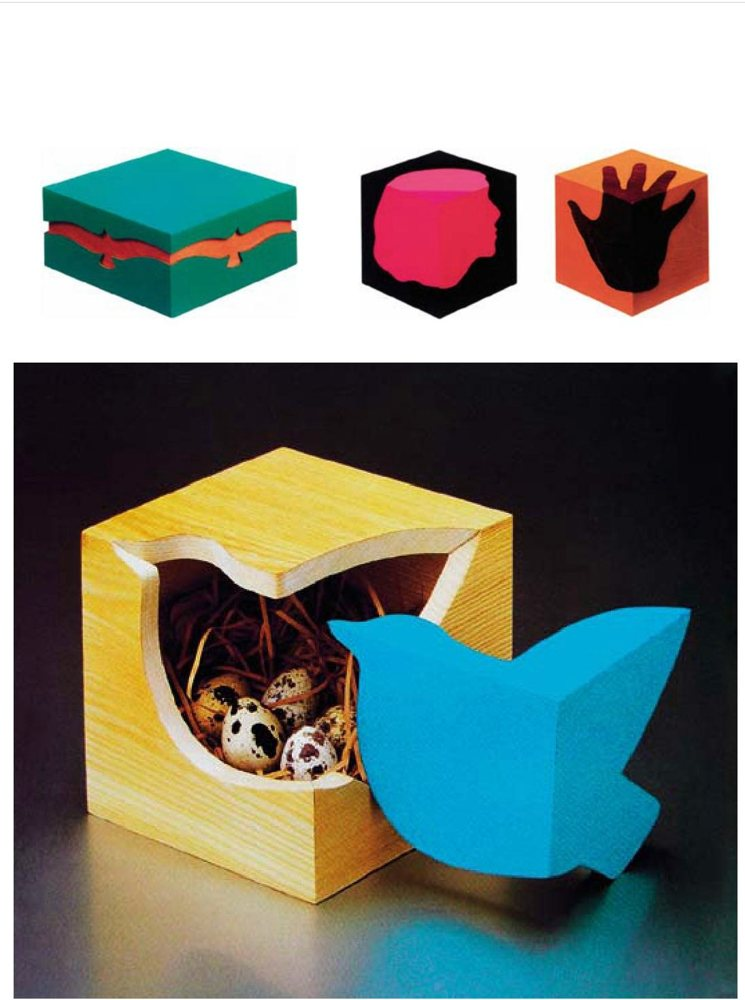
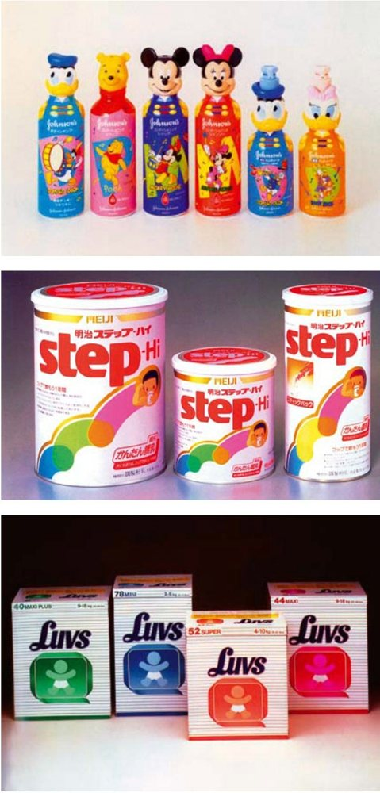
Study cues
- Why does the book use NCS rather than relying only on physical wavelength to analyse packaging colour? What problem in telling colours apart does each of hue, value and chroma solve?
- Choose a set of colours for a children's food product. Write how it handles "memory" and "classification and grading", and name which property (hue, value or chroma) does most of the work.
包裝設計藝術：王紹強
Scope. This is a collection of packaging cases arranged by scenes from daily life, in three groups: enjoying life, improving quality of life, and savouring life. Entries range from ribbons, a carbon-dating pen, headphones and lampshades to Nike, jeans, wine, olive oil and chocolate. Use it to find ideas for structure and reuse; do not treat it as a step-by-step textbook.
Main ideas
- Each case is named after its product and given a page number, so the unit of reading is a single piece of work, not an abstract principle. The three groups separate everyday goods, body care, and food and drink.
- The headphone case states its goals precisely: use less material, use recyclable material, and let the packaging become a headphone stand or protective case in its second life.
- For selling T-shirts, recyclable tins hold different types of clothing. The tins are managed and labelled through a computer system, so the packaging itself is the stock interface.
- The "improving quality of life" group includes teeth whitening, perfume, Nike women's sport, a jeans promotion and hair dye. Here the packaging must handle both use and display.
- The "savouring life" group focuses on spirits, oil, water, tea, chocolate and ready meals, such as Pravda vodka, Lintar olive oil, ZEALONG oolong tea and HEMA takeaway packaging.
Methods
- For each case, write three lines: the life scene it serves, what material it saves or recycles, and what the packaging can still do after it is opened.
- For your assignment, choose one of the three groups first. Borrow only that group's use scenarios, not the luxury surfaces of the other groups.
- If the packaging is meant to be reused, mark a "protective state" and a "second-use state" on the structural drawing. Both states must hold up.
- For brands with larger ranges (such as "six scents"), set the rules for one item first, then copy them to the rest, so that each item does not go its own way.
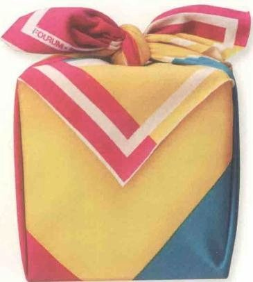
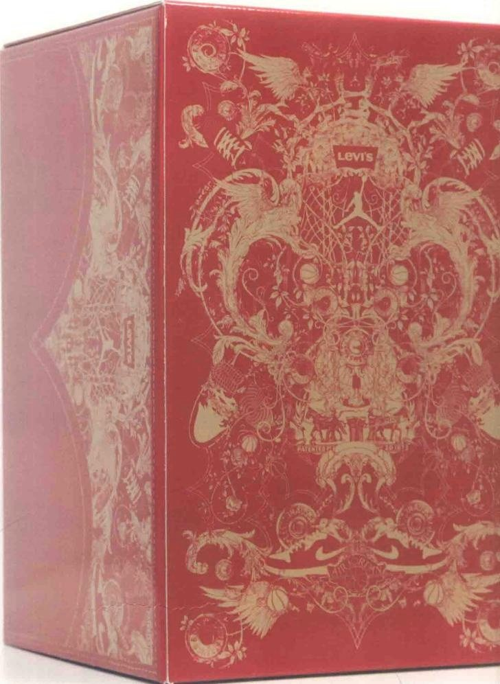
Study cues
- What is the second use of the headphone packaging in the book? Which structural decision separates it from "just printing the box nicely"?
- Choose a product type from "improving quality of life" or "savouring life", and draw a paper or tin structure that works in both its protective state and its second-use state.
紙品包裝結構解析
Scope. This book is entirely about how cartons fold, how they open and how they stand up on the shelf. The overview lists protection, convenience and innovation. The analysis of types divides structures into those that help storage and display (stacking, hanging, pop-up display, windows) and those that help use (carrying, easy opening). Chapter 3 compares these types through cases such as Sakura tissues, a chocolate box, pies, seasoning jars and sweets. For a carton assignment, choose the structure type first, then draw the dieline.
Main ideas
- Pop-up POP displays usually use a folding carton made from one sheet. When the lid opens, it sits at about 90 degrees to the line of sight and echoes the product inside, so you must design both the opened and the closed views.
- A window box cuts a window in one face of an opaque box and covers it with plastic film or cellophane, to show the detail of food, textiles and fine goods.
- Elsa Deplanne's glued chocolate box uses gold to suggest luxury and shows its contents as soon as it is opened. A candle case gathers a triangular antiprism into a single base board that folds inwards to become a candle holder, so no material is wasted.
- Carry packs come as bags or boxes, and their handles must fold away and pull out. A paper carrier bag for animal amulets from the Kiwi shop has small air holes; a Chinese takeaway box strings several compartments together with cord and switches to recyclable paper.
- Easy-open designs must consider the size and position of the opening and how it relates to the graphics on the surface. The Paulin screw boxes use 100% recyclable material, and several boxes lock together into a small cabinet through their structure alone, without glue.
Methods
- First circle one type on your brief: stacking, hanging, pop-up display, window, carrying or easy opening. Focus each assignment on one type; a second type can only play a supporting role.
- For a pop-up display, draw two views: the shelf face when closed, and the display face when opened at right angles to the line of sight.
- Before you add a window, write down which detail the customer needs to see. The position of the window serves only that detail.
- Whenever you claim that no glue is used, draw how the tabs or folds lock in both states: in transit and on display.
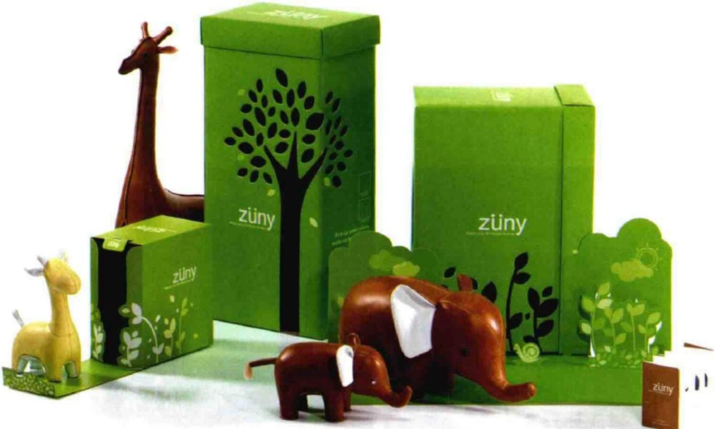
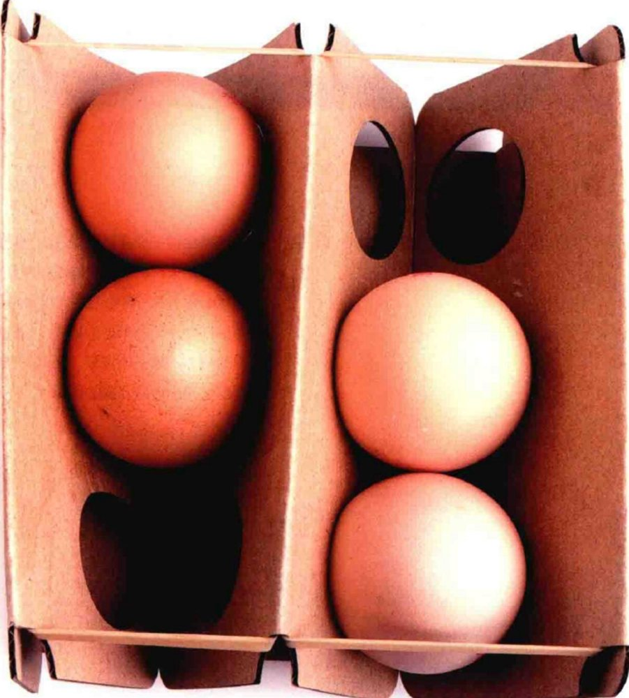
Study cues
- What shelf problem does the pop-up POP display solve, and what does the window box solve? What did the chocolate box and the candle case each save?
- Draw a glue-free paper structure for a box of small parts or a takeaway meal. Mark the position of the opening, and show how the handle folds away or the tabs lock during transport.
新包裝
Scope. This is a collection of cases organised around new materials and new structures, with a foreword by the strategic creative director of a Scandinavian design lab. Projects are grouped under quality of life and enjoyment of life, and each case lists the design agency, creative director, client and country. Use it to learn how to carry a structure through to the end on a limited budget, not to collect luxury photos.
Main ideas
- The foreword ties eco design to the designer's curiosity: only after mastering material, structure and identity does a piece of work become easy to recognise.
- The Hush candle packaging uses bold Pantone colours and polished art paper on the outside, but the real action is inside: when you open it, the pleated base unfolds outwards and presents the candle to you. Aloof Design achieved this on a limited budget.
- De Beers' luxury identity was handled by Dew Gibbons, and its rhombus shape comes from the facets of a diamond. Inni jewellery turns simple geometric points into a complex three-dimensional interior, and treats the feel of the material as part of the design.
- When twentytwentyone reissued classics by Lucienne and Robin Day, the packaging used recycled kraft paper, Irish linen and wood. It was screen-printed and assembled without glue, and kept costs down with few images and few processes.
- The Marks & Spencer packaging concept required one structure to serve several gift categories. The merchandise packaging for the MALBA museum was designed, illustrated and produced by DUOIDO.
Methods
- For each case, note only four things: what the structure does when opened, how the material feels, which process was cut, and where the budget limits are stated.
- If the concept depends on "the moment of opening", first make a paper model that opens and closes, check which way the pleats unfold, and only then think about printing.
- For a glue-free structure, write out the assembly order. If it takes more than five steps, go back to the principle of the Robin Day tea towel case: cut the processes.
- If a luxury assignment borrows a rhombus or a layered bottle, state which physical feature of the product the geometry corresponds to, such as cut facets or mouthfeel.
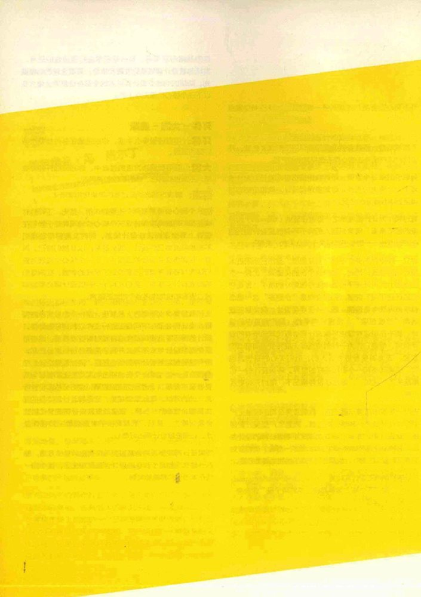
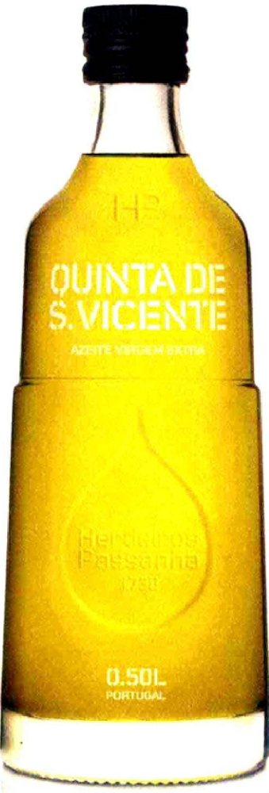
Study cues
- Which structural action creates the surprise in the Hush candle packaging? Which product feature does the De Beers rhombus correspond to, and which does Inni's three-dimensional interior correspond to?
- Make a gift carton within a low budget you set yourself, with no glue allowed. Write down the two processes you cut, and what the customer sees first on opening.
環保包裝設計
Author: Pan Xiaoxiao
Scope. This book runs from Tony Ibbotson's argument for eco design to materials and labelling. It explains why eco packaging is urgent, then covers natural, handmade and composite materials, as well as reduction, recyclability, biodegradability, reusability and eco-friendly inks. Applications follow, such as the Dulce Plai honey jar and Pizza Shigaraki packaging. For a sustainability assignment, use it to choose one strategy and to be able to say where the material goes after it leaves the bin.
Main ideas
- The book calls the present "the plastic age": plastic is cheap and durable but does not biodegrade, and its life cycle often outlasts the product it protects. Examples of killer whales and pilot whales swallowing packaging show that the bin is not the end of the story.
- Eco design should not be added as an afterthought. Guzman y Gomez's Mexican fast-food takeaway switched from card to recyclable plant-based packaging with the logo printed directly on it, so that the feel of the material matches the brand's simple, rustic food.
- To judge whether a pack is eco-friendly, look at the material type (natural, handmade or composite) and whether it is about reduction, recycling, degradation or reuse.
- Eco-friendly inks and eco labels are listed separately, so that you do not change the material while still printing with problematic inks.
- The cases stress the unexpected and multiple uses: a fully biodegradable book and its packaging use degradable paper, soy ink, walnut wood and cloth; a corrugated structure does without adhesives and fittings to cut carbon emissions.
Methods
- Write the strategy on the first line of your brief, and choose only one main strategy: reduce, recyclable, degradable or reusable. Anything else can only be a side effect.
- Write down the next stop in the material's life cycle: what it is recycled into, what conditions it needs to degrade, or what object it becomes in its second use. If you cannot name the next stop, you cannot call it eco-friendly.
- Specify the ink separately in the print specification. If eco-friendly ink is not possible, admit in your notes that this part is unfinished.
- Check against the labels in the book, and use only the one that really matches your material and the recycling system.
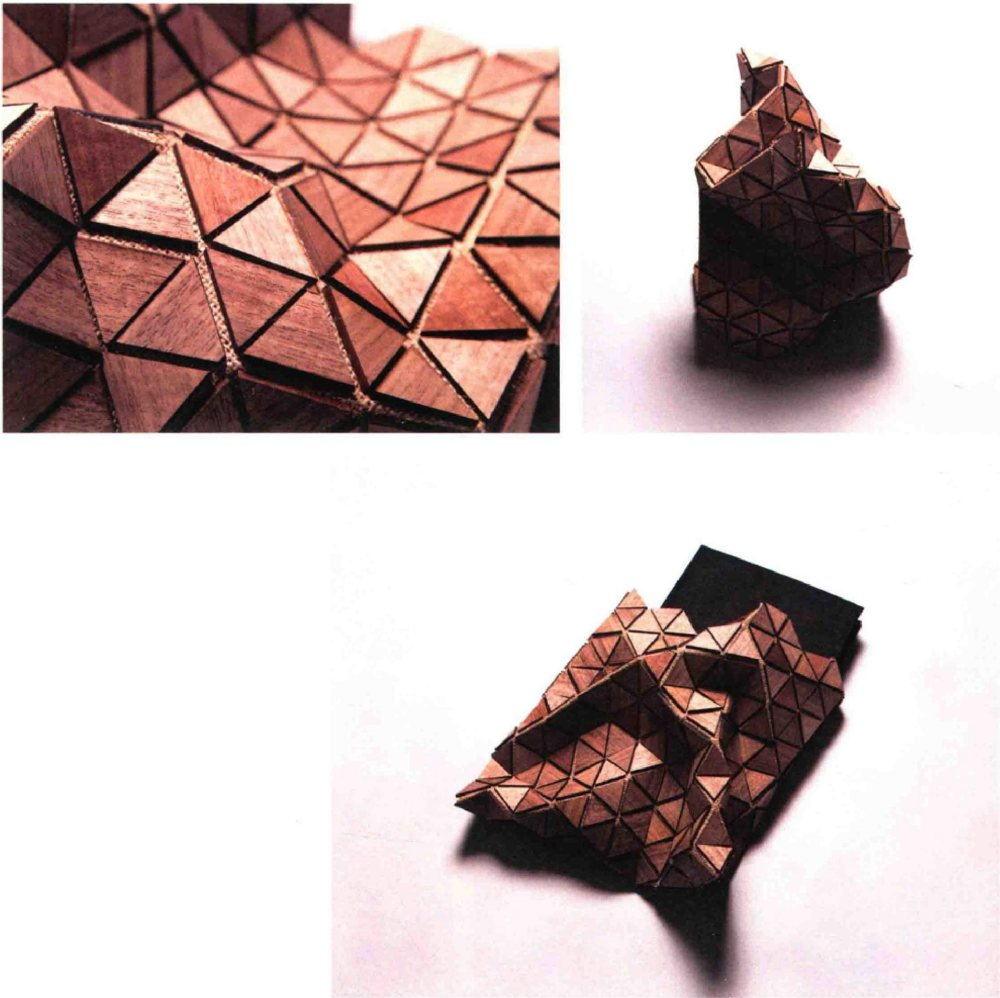
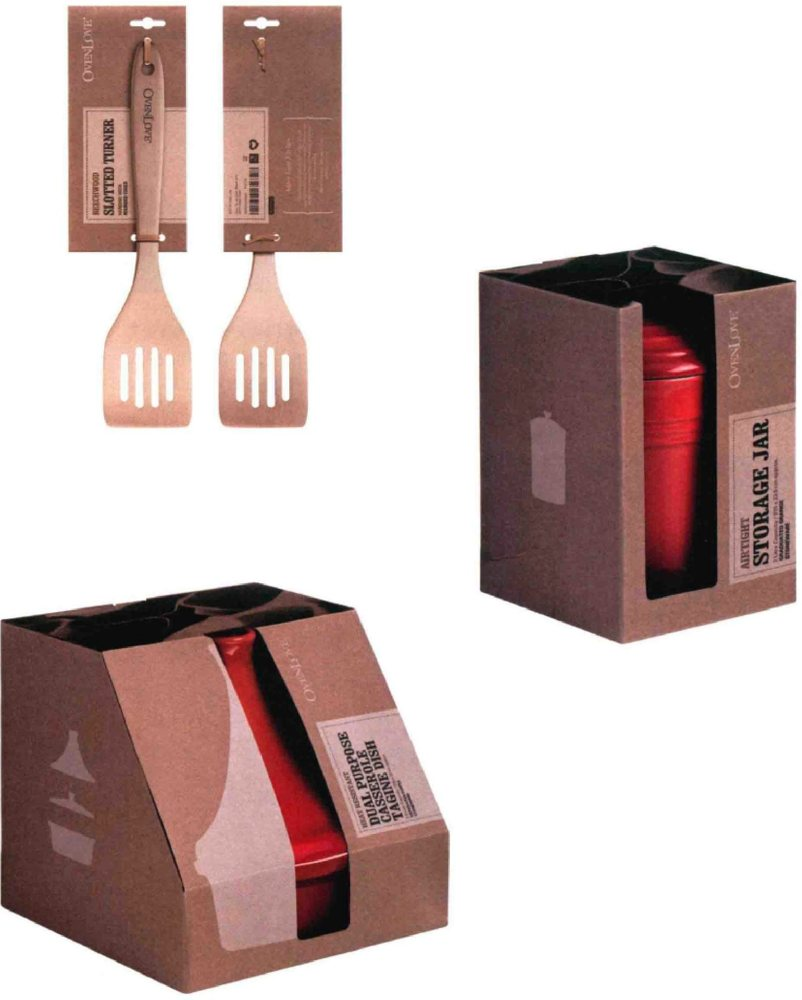
Study cues
- Which examples does the book use to show that the life cycle of plastic packaging outlasts the product? Which material did Guzman y Gomez's takeaway change, and which brand practice did it keep?
- Turn a campus takeaway box into a recyclable or biodegradable design. State the main strategy, the ink choice, and the next stop for the material after use.
50 Trade Secrets of Great Design Packaging
Scope. This book uses interviews to record the working secrets of packaging designers, rather than showing finished work. The author asks each person how they start, what brief they received, what process they use, and how they know a solution is right. Students should read it as a set of process interviews: pay attention to touch, material and "sketches the client never saw", rather than just memorising brand names.
Main ideas
- The interviewees call packaging the most emotional and the most physical kind of design. They refuse to show clients flat sketches alone, because touch, reflection and a three-dimensional object in the hand are what trigger a response.
- Plastic, ceramics, paper and card offer different possibilities. Texture, surface treatment and construction methods on board can reflect both product quality and recycling issues.
- Glass creates difference through transparency and weight; special moulds benefit from computer visualisation, which cuts the cost of machine sampling. Designers must know what can and cannot be made.
- The stories come from original sketches that designers were willing to show but that even their clients had never seen, so the focus is the process of judgement, not the final photography.
- Items in the contents include Verjuice, Boots herbal products, Mondeo, Chivas Brothers and Black Wattle, showing that even ordinary products (such as water) can be given a new personality.
Methods
- Review your own assignment with the book's four questions: how did you start, what was the brief, what was the process, and on what grounds do you say this solution is right?
- Before a review, prepare a model that can be held in the hand. Flat drawings are only an appendix, because the book's criteria include touch and reflection.
- When you choose a material, write two lines: one effect it can achieve, and one effect it cannot achieve, which you therefore give up.
- Keep one sketch that you did not show the "client", and note beside it why it was later rejected.


Study cues
- Why do the interviewed designers refuse to show only flat sketches? What possibilities are pointed out for glass and for board?
- Use the book's four questions to write half a page of process notes, and attach a sketch that you left out of the final artwork but that explains your judgement.
1000 Package Designs：A Comprehensive Guide
Scope. This is a numbered packaging catalogue arranged by design agency, and much of this reprint copy consists of images and agency names. The readable passage is Firebelly Design's own account of "successful design": believe in ideas, be passionate about the message, follow your judgement; the client hands over the brand, and the design gives back integrity. Use it as a visual index and for comparison; do not read it as a theory textbook.
Main ideas
- The book is organised by agency, with roughly continuous numbering, so you look things up by page rather than through chapters on method.
- Firebelly defines success as a conversation: ideas are heard, passion earns trust, intuition earns respect. The reward is integrity, understanding and design that moves people.
- Agencies that appear again and again in the sample include Sagmeister Inc., Turner Duckworth, Milton Glaser, Inc., Design Bridge, Concrete Design Communications and Chronicle Books.
- Categories range from books and fragrance (L'Oréal and Diesel fragrances) to packaging experiments between commerce and art. Geographically, the entries include the USA, the UK, Canada, Australia, Austria and Venezuela.
- Pages often show only the agency, country and number. When reading, first check whether something is index information or a description of the work.
Methods
- Before making a mood board, copy out ten entries by number: agency, country, the category you can see, and one graphic or structural decision. If you cannot fill all four columns, do not add the entry to your references.
- Find two agencies in the same category (for example, both doing fragrance or books) and compare only how they build identity, not how fine the printing is.
- Test your concept with Firebelly's three sentences: can the idea be heard, can the message be trusted, and is the judgement specific enough to become a form?
- When you use this book as a reference, keep "agency names you can verify" separate from "images you cannot see clearly", so that you do not treat damaged pages as facts about a case.
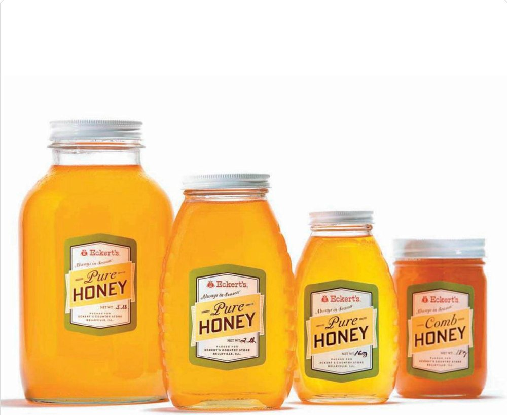
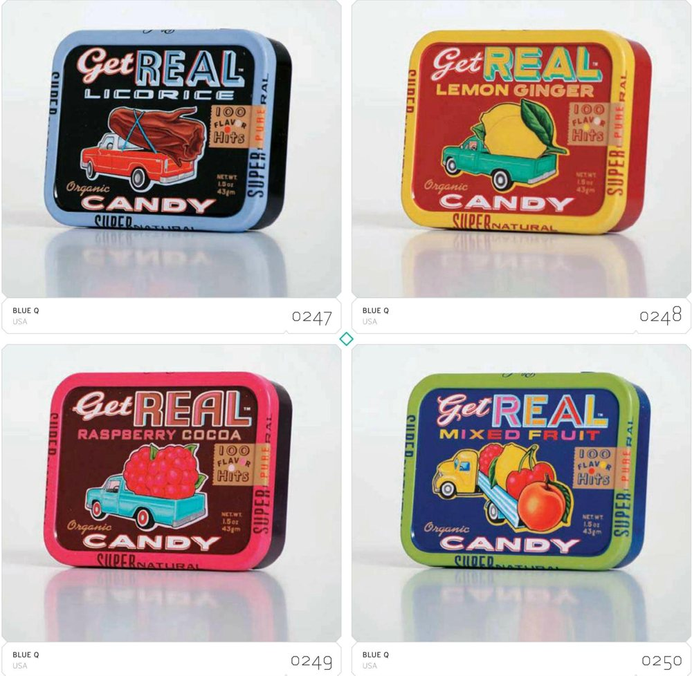
Study cues
- Which three conditions does Firebelly use to define a successful design conversation? By what unit are the catalogue's entries mainly arranged?
- Choose packs by two agencies in the book and write one form decision you can point to in each. Then use "integrity" to explain what your own assignment still lacks.
拿來就用的包裝設計
Scope. This book runs from what packaging is to structure, printing, visual communication and creative expression, and it is a good way to build vocabulary when you start out in packaging. It divides value into protection and storage, aesthetics, promotion and commerce, and divides elements into object, material, form, protective technology and visual communication. The cases demonstrate these terms; they do not replace your own research.
Main ideas
- Packaging developed from leaves, shells and animal skins to the new materials that followed the Industrial Revolution, and its function expanded from protection and storage to branding, stimulating consumption and aesthetics.
- Its direct value is to deliver the product to people undamaged and to deal with corrosion, shelf life and protection. Aesthetics and promotion support each other, but in the end they still serve commerce and extra use value.
- A PET milk bottle uses black-and-white cow patches as its graphics and through them points to its British origin. After the redesign, the bottle is easier to spot among similar products.
- Wooden packaging on a Canadian lumberjack theme can be taken apart into a hanger, coasters or a money box. The bark textures of pine, birch and maple hint at the colours of the clothes. It targets 12- to 24-year-olds and also promotes sustainable use.
- An egg pack holds the eggs with perforations on both sides; squeeze the bottom end and an egg drops into your hand. The material is recyclable card. Another red, white and blue pack uses stars and the Christian Ichthys symbol as its identity.
Methods
- Divide the concept page into five boxes: object, material, form, protection, visual communication. Start the renderings only when you can fill all five.
- For every "extra value" you add (aesthetics, promotion, reuse), write down which protective function it does not compromise.
- If you use a cultural symbol to point to origin, like cow patches or lumberjacks, first write down whether the audience can recognise it without reading an explanation.
- For packaging that comes apart, list every part after disassembly and make sure each one is still a complete object, not a fragment.
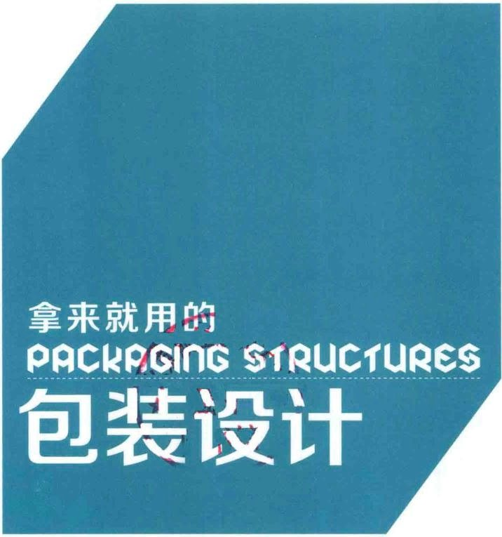
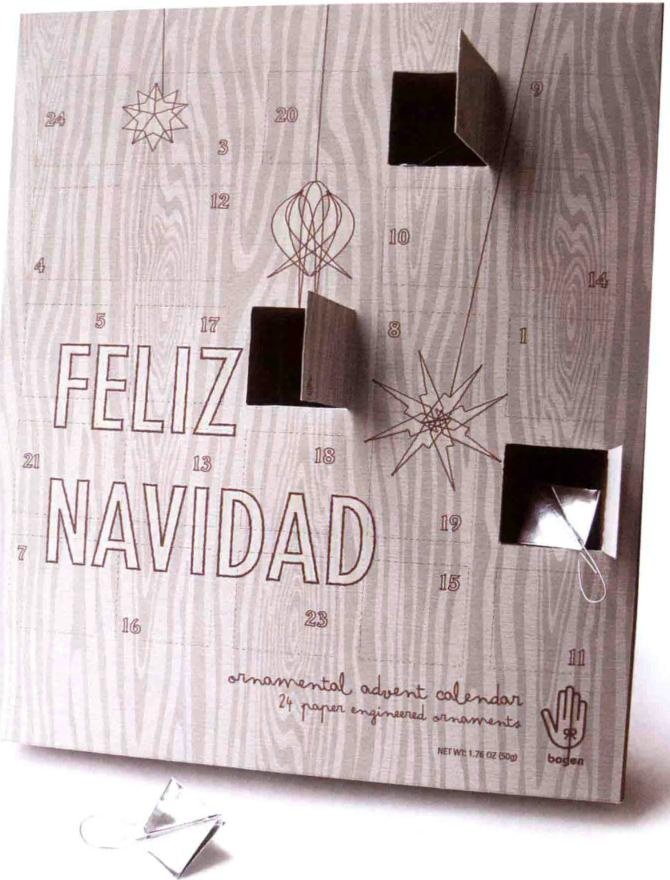
Study cues
- How does the book distinguish the direct value of packaging from the aesthetic, promotional and commercial value added later? Which visuals do the milk bottle and the lumberjack wooden box each use to point to their origin?
- Make a perforated or squeeze-to-release card structure for a fragile food, and explain what use the material can return to after it is opened or used up.
食品包裝設計
Scope. This book centres on three questions: can packaging tell a story, where does inspiration come from, and why does food need packaging? The answers are gathered into protection, convenience and boosting sales, then applied to trusting the brand, highlighting the food's features, and range packaging. The preface uses the shopping bag Memo Productions made for Tarry Market to show that a low budget can still tell a brand story.
Main ideas
- The book gives three reasons for food packaging: protect the food, bring convenience, boost sales. The design choice that follows is whether to trust the power of the brand or to put the features of the food itself first.
- Range packaging is illustrated by Salvatierra, Sweet Son and Coastal Catch: a set of packs must share one story while each one highlights how its food is different.
- Tarry Market's takeaway bag had a small budget. The studio refused to simply print a logo on the front and back. Instead it made a bag worth showing off, like the bags from Via Monte Napoleone in Milan, and covered it in the language of old-style printing.
- Customers were happy to take the bags home, keep them and use them again. The book uses this result to connect the shop's industrial past, its American roots and its care for the details of ingredients.
- The farm illustrations are limited to no more than three colours each and gain richness through overprinting. A Greek case uses the hand as an image of the spiritual and the sacred, in collaboration with a Byzantine icon painter; it was designed by mousegraphics.
Methods
- First choose the main reason from the three: protection, convenience or promotion. The story can only strengthen that one; it cannot replace shelf life or the way the pack opens.
- For a range assignment, use one shared set of rules (logo position, colour limit) plus one food feature per item. The feature must belong to the food itself, not to a decorative theme.
- For a low-budget design, write down "where the savings are" and "why it is still worth carrying around", following the example of the Tarry Market bag.
- If the illustrations are limited to three colours, first decide the fourth effect that overprinting can create, then decide which food feature can be recognised with just those three colours.
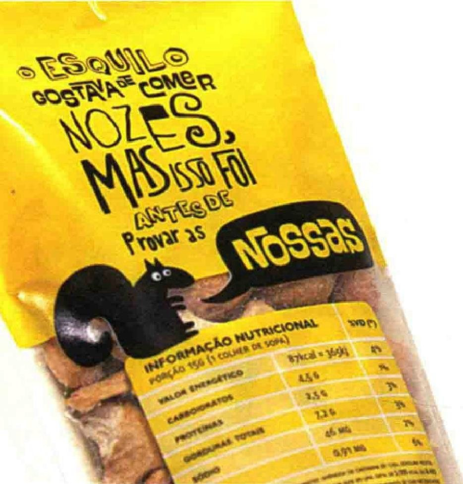
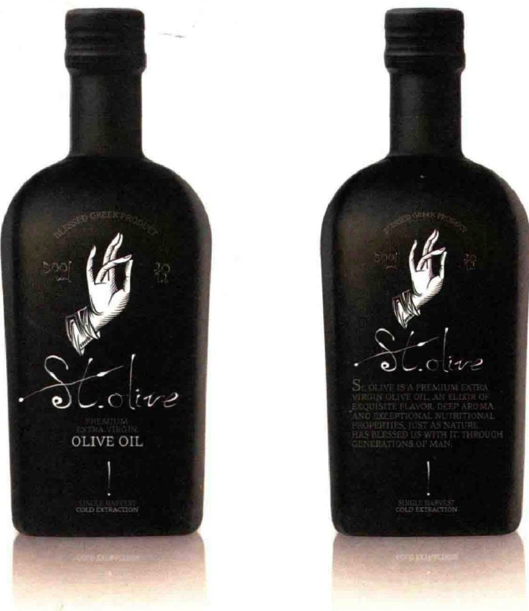
Study cues
- Which approach did the Tarry Market bag reject when the budget was limited? What three reasons does the book give for food packaging?
- Write shared range rules for a set of three food products, and highlight only one food feature on each. Use no more than three colours.
包裝設計+：給你靈感的包裝方案
Scope. This is a collection of packaging solutions from around the world. Each project lists its purpose, design company, creative director, designer, client and country. The book stresses that packaging builds a connection between product and consumer, and that it brings out culture, corporate values and the designer's personal style. Use it to find comparisons for assignments on naming, labelling and cross-category extension, but do not copy whole pages.
Main ideas
- Build Your Own was a Christmas gift and business introduction with a print run of 5,000: blank, high-quality wine bottles carry labels with close-ups of staff faces, so that clients think of the studio when they give the bottles as gifts. It was designed by Tony Ibbotson and Andi Yanto of The Creative Method in Australia.
- Marlborough Sun built a wine's naming, branding and labels from scratch. A newspaper style lets the label be redone every year and gives each grape variety its own personality, while humour helps it stand out on the shelf.
- Niagara mineral water, by Alexey Kurchin of Hattomonkey, shows that even a featureless product category like water still relies on naming and labelling to build identity.
- The Flight 001 world clock uses thin, light wood and shows three time zones at once; the packaging and the product together solve the traveller's nuisance of resetting the time. It was designed by Adam Muledi of the USA.
- BMW's PURE skincare is the car brand's extension into skincare. The packaging has to connect with the existing company, not just look like an ordinary skincare bottle.
Methods
- Take notes on each reference project using the book's fields: purpose, company, client, country, print run or material limits. Do not borrow cases that lack a stated purpose.
- When making a label, first decide whether it is a fixed identity or, like a newspaper, can change with the year or variety. The two need different grids.
- For a cross-category extension (cars to skincare, a travel shop to clocks), write one rule inherited from the original brand, such as material, geometry or use scenario.
- For an assignment that is both a gift and a self-introduction, spell out how "people" are put into the label: as faces, as working hours, or as a line that only that client would understand.
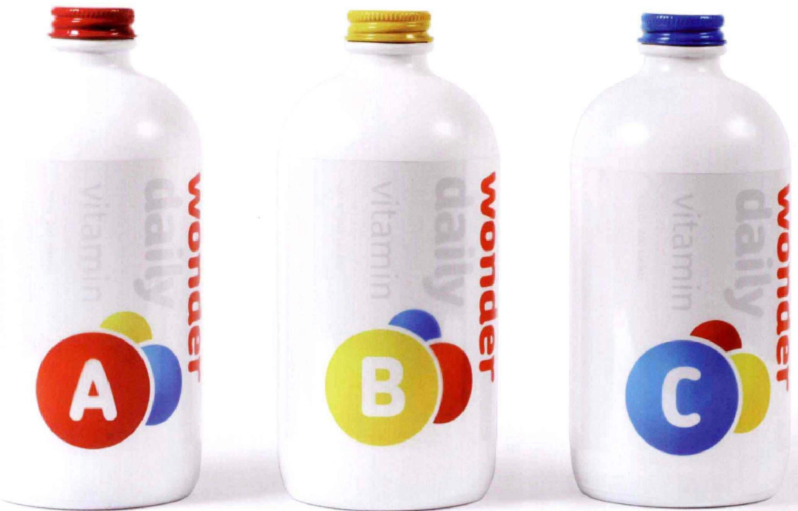
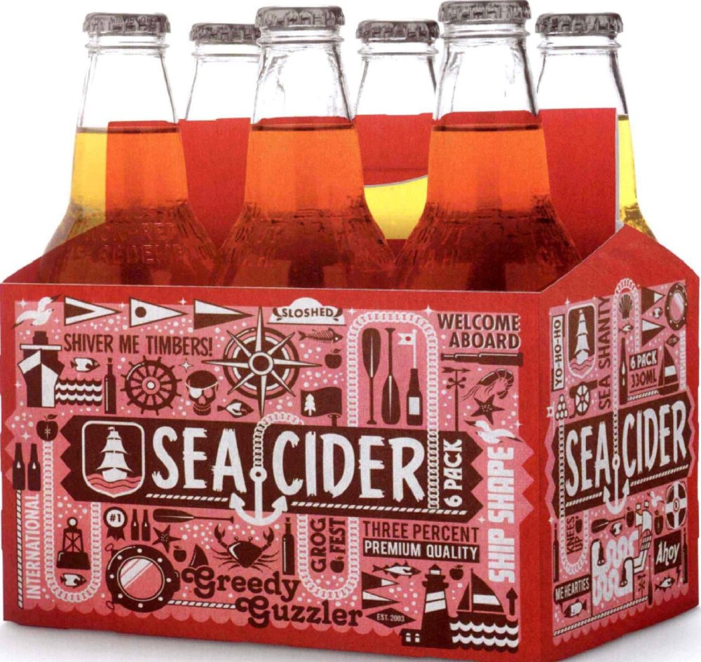
Study cues
- Whose faces are on the Build Your Own labels, and how large was the print run? Why does Marlborough Sun use a newspaper-style label that can change every year?
- Plan a cross-category extension for a brand that already has a main business. Write down one visual rule it inherits and one nuisance in use that the new packaging must solve.
包裝設計家：靳埭強與他的設計師朋友
Scope. This book centres on the work of Kan Tai-keung and his designer friends and on conversations with them; one of its main focuses is the Japanese designer Shin Matsunaga. The packaging cases concentrate on wine labels, coffee, dairy products, toys, petrol and household detergents. When reading, take separate notes on "how the label shape breaks the mould" and "how the container shape explains its use".
Main ideas
- The T'Gallant wine range seeks novelty through irregular label shapes. Osborn's is elegant in style, with birds drawn here and there with a flat-nib pen, lifting the wine to a refined level. Tarrawarra and Hidden Creek likewise stand out through their label shapes.
- For the knitwear detergent, the key is not the label illustration but the shape of the container: it must be easy to use and make it clear at a glance what the product does.
- Shin Matsunaga created the visual identity for the 1989 Pan-Pacific International Design Conference in Tokyo, using clean geometry without falling into cliché. Kan Tai-keung met him at that conference.
- Matsunaga graduated from Tokyo University of the Arts in 1964 and from 1971 worked as a designer in Shiseido's advertising department. He later set up his own office and continued to design packaging for Shiseido. He stresses that designers must persevere and absorb local culture, and he once worked with a photographer to record everyday life and landscapes in Japan.
- He describes how the special features in CREATION, HQ and GRAPHIS were each edited in a different way. He also explains that part of his name, read as "eternal truth", stands for pursuing true design in a peaceful world. Posters, packaging and corporate identity are his three most outstanding areas of work.
Methods
- For wine labels or poster-style labels, draw the silhouette of the shape first. If the silhouette looks no different from a rectangular label, the "breakthrough" does not hold.
- Test everyday containers by their side silhouette first: without seeing any text, can classmates tell whether it holds detergent, food or fuel?
- When reading designer conversations, pick out only three lines that would change your assignment, such as perseverance, local culture and truth, and pair each with a form decision of your own.
- If a geometric graphic is meant to be clean, limit the number of elements first, then check whether it still identifies that event or that brand.
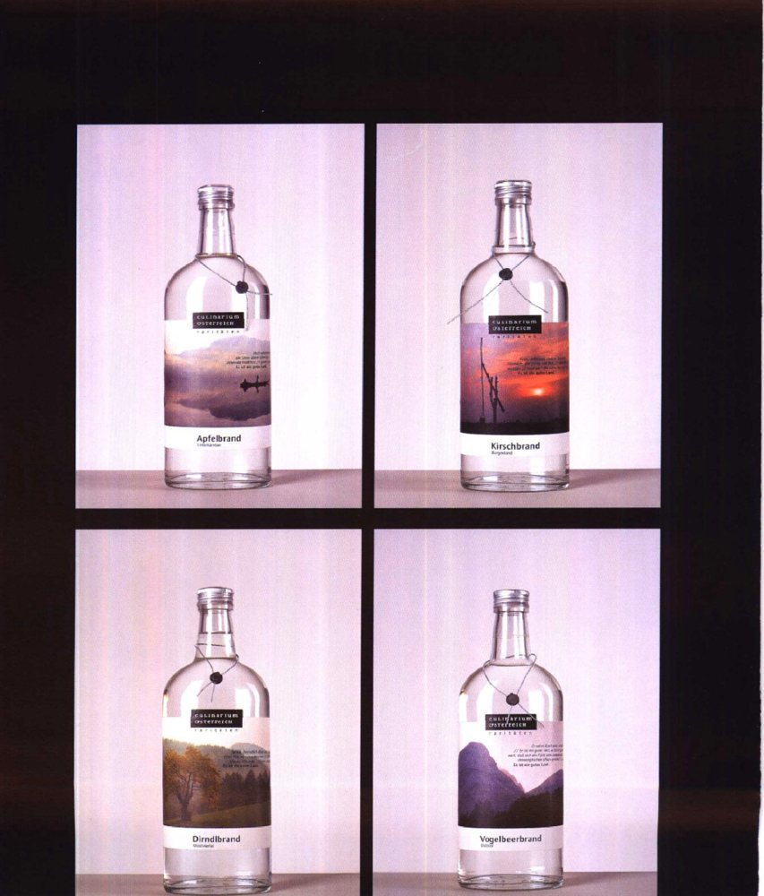
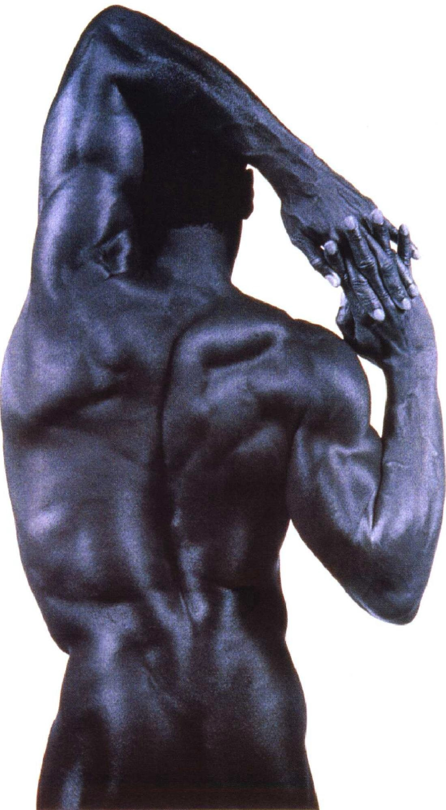
Study cues
- What makes the T'Gallant and Osborn's wine labels look different? What does Shin Matsunaga think the younger generation easily overlooks behind his success?
- Draw the side silhouette of a container for a household detergent so that someone can tell its use without reading any text. Then write down one feature you took from local everyday goods rather than from label decoration.
簡約包裝 Simply Packaging
Original title: Simply Packaging
Scope. This is a collection of cases written as short project notes; each entry gives the client, design direction, year and a paragraph of description. The content ranges from paper samples and gift and catalogue packaging to a Nike invitation, an Air Max shoebox and the usability details of a sandwich box. Use it to learn how "less material" can become a form you can feel with your hands.
Main ideas
- Industrial production and sustainability are summed up in the same sentence: the less material, the better. FormaFantasma even calls sustainability the last form of luxury.
- Heiwa Paper needed one sample to represent a whole range of heavy papers. CoDesign believed that what moves people is the experience of use, not graphics, so it made the paper sample into a dumbbell that lets people feel the weight of the paper in their hands.
- The Pedder Group packaging gathers a free gift, a CD catalogue and a press release into one piece. It has to be easy to use and worth keeping.
- "Museum For Sale" is the catalogue of a travelling museum. It presents the Carmen Canton Ego art centre as a box, and the box itself is one of the exhibits.
- The sandwich packaging leaves finger slots so that customers can slip their fingers in and lift the food out. ECOPOLO makes every piece slightly different, putting mass production and uniqueness side by side.
Methods
- For a minimal assignment, list the materials first, then cut until nothing more can go. Each time you cut something, note whether the feel and the protection are still there.
- Do not make a paper or material sample as a shrunken booklet. Turn it into a shape that can be gripped and whose weight or thickness can be felt, such as an everyday object like a dumbbell.
- If a pack also serves as a gift and a catalogue, list the opening order: what is touched first, what is read next, and what is kept at the end.
- Check functional details (finger slots, handles, openings) with photos or step diagrams of one-handed use; do not rely on decoration to fix them.
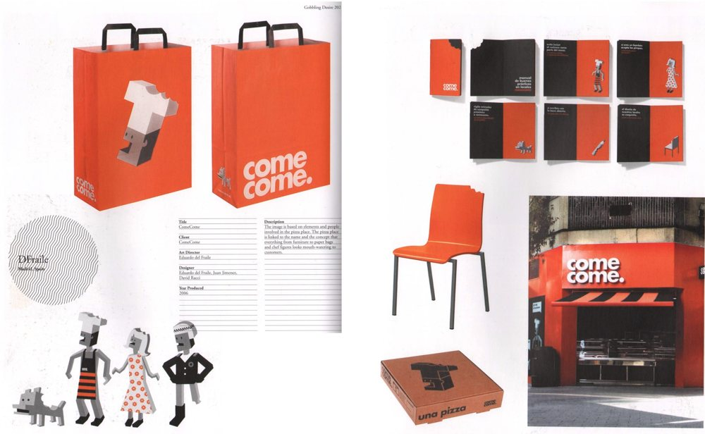
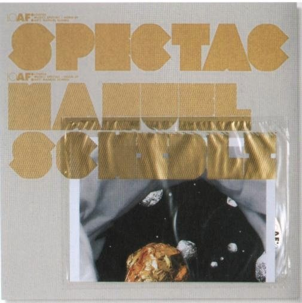
Study cues
- Why was the Heiwa paper sample made into a dumbbell rather than a swatch book? Do ECOPOLO's "every piece is different" and "the less material, the better" point to the same kind of simplicity?
- Add a structure that serves only a hand action (a finger slot, a handle or a shape whose weight you can feel) to a heavy paper sample or a takeaway food pack, and delete one graphic you had planned to print.
中式元素視覺傳達：包裝設計
Scope. This book uses cases to show how Chinese visual elements can become part of packaging, rather than just being pasted on as patterns. Projects include a Wuqiang New Year print gift box, Slow Matter's revival of New Year prints, mid-autumn mooncakes based on movable type, Gejiu tin carving, the shadow-puppet pack "A Good Show" and "Lasting Together at Festival Time". For cultural packaging, use it to check whether the craft has entered the structure and the opening process.
Main ideas
- "Everything as You Wish" by Slow Matter takes Bi Gan, the civil god of wealth, as its theme; it took six months and more than thirty versions of the image to finalise. Ma Xiqin, an inheritor of the Wuqiang New Year print tradition, carved the blocks and printed them, and the prints were then mounted onto the New Year gift box.
- A one-piece framed tea box turns the New Year print into both packaging and a framed picture: the core panel of the lid is removable and held by magnets, so the picture can be changed after a year. The patent number is given in the case, stressing that the structure is an invention and not just decoration.
- The 2018 mid-autumn poetry mooncakes by Xinyu Creative use movable type as their concept. The team chose the final texts from about fifty poems, adjusted the Song-style characters into mould characters 3.5 cm in size and 2.5 cm high, and chose Japanese Momoyama pastry to control the baking.
- Beyond protection and transport, the mooncake box has to achieve three kinds of interaction: guiding, engaging and creating an experience. The base borrows the type tray from movable-type printing, and three layers of "walls" control the volume, reducing material and shipping costs.
- Other cases write the craft straight into the title: the shadow-puppet pack is divided into four acts (wind, flowers, snow and moon), the tin carving corresponds to the rainforest, and "Flower Moon Night" was made for Ximing Tea. Another mooncake wrapper unfolds and pieces together into the 《蘭亭集序》, with a bookmark that plays on the story of "eating ink".
Methods
- After choosing a craft, write out its processes (block carving, typesetting, carving, shadow play). The opening sequence must then take people through at least two of those steps.
- If a cultural symbol should not simply be thrown away (the replaceable New Year print panel is one answer), explain how the packaging will still be used after a year or a season.
- Control the volume: when drawing a three-layer structure, mark the width and height of each layer, and write which layer is for display and which is for saving shipping space.
- If poems or type are to be moulded, first set the smallest readable size and a stroke weight that will not blur when baked or embossed.
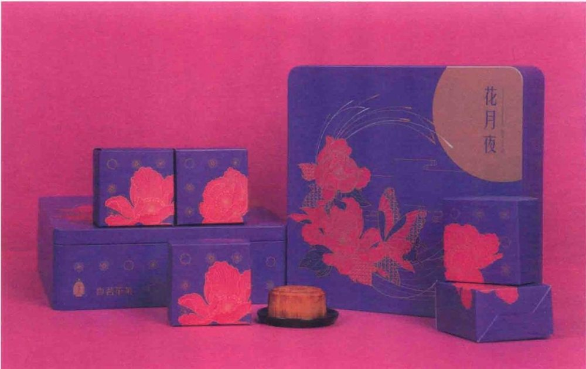
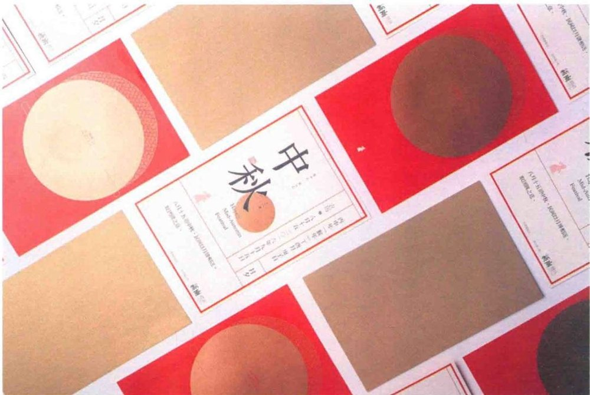
Study cues
- How does the "Everything as You Wish" gift box keep the New Year print as a picture after the festival? What three functions must the opening process of the movable-type mooncake packaging fulfil?
- Choose New Year prints, movable type or shadow puppetry, and draw the opening sequence for a festive food pack. Mark the step at which the audience sees the craft, and which layer of the structure is there to reduce shipping volume.